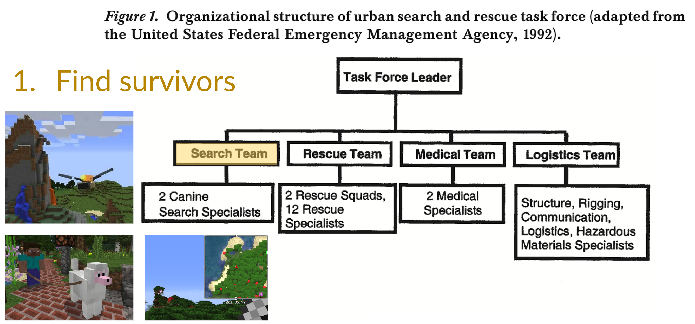
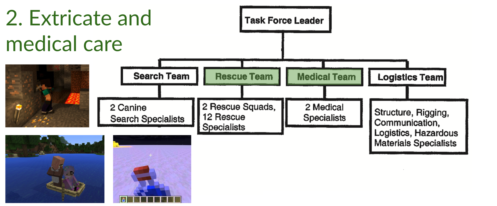
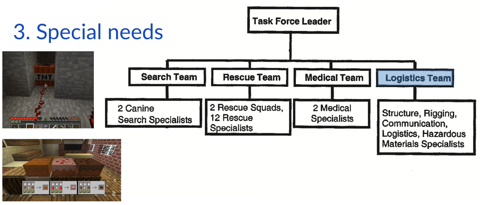
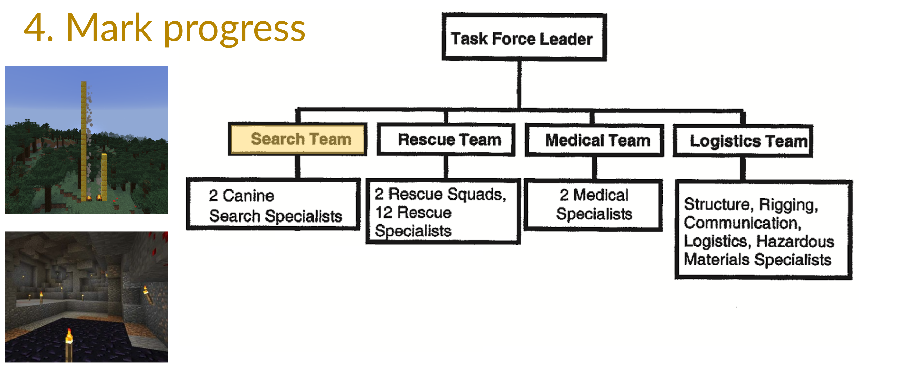

Search and Rescue (SAR) missions#
I didn't really understand how essential teamwork is to SAR until I played a Minecraft team survival game. Lost in abandoned Mineshafts, killed around spawn points, forever lack of food supplies ... thinking about how a team coacher might advise me has made me a better team player. -- Yang
Real-world SAR missions#
SAR: Search for and provision of aid to people who are in distress or imminent danger. Real-world SAR tasks usually include the following features:
- Collapsed environment in urban SAR
- Natural environment in ground, mountain, cave, and maritime SAR
- Perceptually disorienting
- Physically and cognitively fatiguing
- Operations of hazard materials or weapons of mass destruction
SAR team and procedure usually consists of:




Further readings:
- Jennifer L. Burke, Robin R. Murphy, Michael D. Coovert, and Dawn L. Riddle, Moonlight in Miami: A Field Study of Human–Robot Interaction in the Context of an Urban Search and Rescue Disaster Response Training Exercise, 2004
- Yuening Zhang, slides on USAR practice